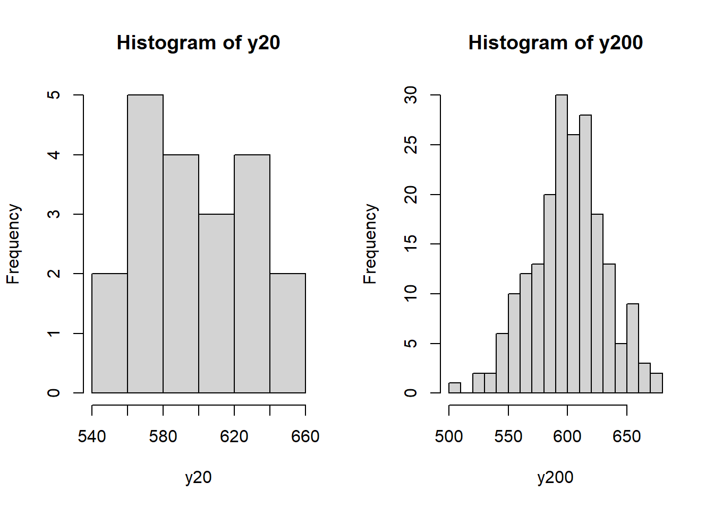
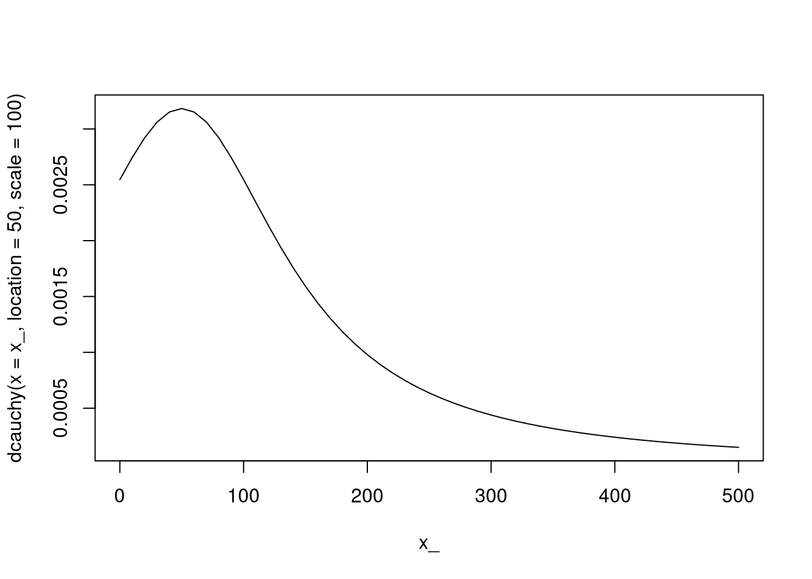
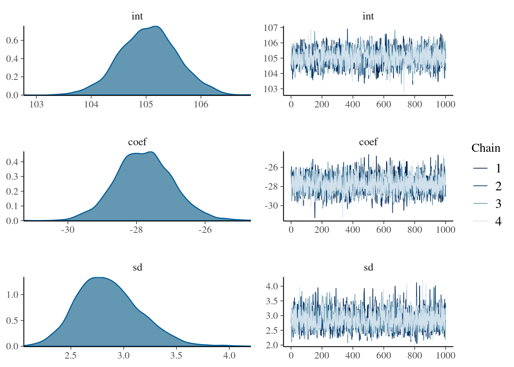
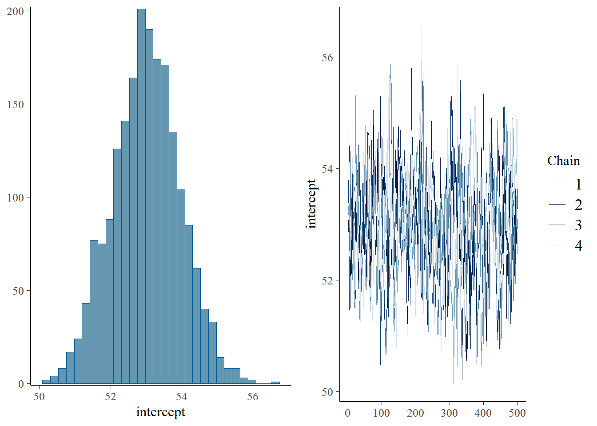
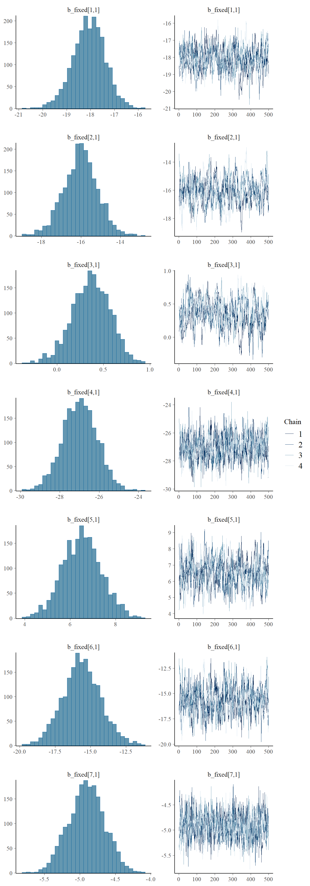

7 Introduction à l’analyse bayésienne en écologie
️ Objectifs spécifiques:
Ce chapitre est un extra. Il ne fait pas partie des objectifs du cours. Il ne sera pas évalué.
À la fin de ce chapitre, vous
- serez en mesure de définir ce que sont les statistiques bayésiennes
- serez en mesure de calculer des statistiques descriptives de base en mode bayésien avec le module
greta.
Les statistiques bayésiennes forment une trousse d’outils à garder dans votre packsack.
7.1 Qu’est-ce que c’est?
En deux mots: modélisation probabiliste. Un approche de modélisation probabiliste se servant au mieux de l’information disponible. Pour calculer les probabilités d’une variable inconnu en mode bayésien, nous avons besoin:
- De données
- D’un modèle
- D’une idée plus ou moins précise du résultat avant d’avoir analysé les données
De manière plus formelle, le théorème de Bayes (qui forme la base de l’analyse bayéseienne), dit que la distribution de probabilité des paramètres d’un modèle (par exemple, la moyenne ou une pente) est proportionnelle à la mutliplication de la distribution de probabilité estimée des paramètres et la distribution de probabilité émergeant des données.
Plus formellement,
\[P\left(\theta | y \right) = \frac{P\left(y | \theta \right) \times P\left(\theta\right)}{P\left(y \right)}\],
où \(P\left(\theta | y \right)\) \(-\) la probabilité d’obtenir des paramètres \(\theta\) à partir des données \(y\) \(-\) est la distribution de probabilité a posteriori, calculée à partir de votre a prioti \(P\left(\theta\right)\) \(-\) la probabilité d’obtenir des paramètres \(\theta\) sans égard aux données, selon votre connaissance du phénomène \(-\) et vos données observées \(P\left(y | \theta \right)\) \(-\) la probabilité d’obtenir les données \(y\) étant donnés les paramètres \(\theta\) qui régissent le phénomène. \(P\left(y\right)\), la probabilité d’observer les données, est appellée la vraissemblance marginale, et assure que la somme des probabilités est nulle.
7.2 Pourquoi l’utiliser?
Avec la notion fréquentielle de probabilité, on teste la probabilité d’observer les données recueillies étant donnée l’absence d’effet réel (qui est l’hypothèse nulle généralement adoptée). La notion bayésienne de probabilité combine la connaissance que l’on a d’un phénomène et les données observées pour estimer la probabilité qu’il existe un effet réel. En d’autre mots, les stats fréquentielles testent si les données concordent avec un modèle du réel, tandis que les stats bayésiennes évaluent, selon les données, la probabilité que le modèle soit réel.
Le hic, c’est que lorsqu’on utilise les statistiques fréquentielles pour répondre à une question bayésienne, on s’expose à de mauvaises interprétations. Par exemple, lors d’un projet considérant la vie sur Mars, les stats fréquentielles évalueront si les données recueillies sont conformes ou non avec l’hypothèse de la vie sur Mars. Par contre, pour évaluer la probabilité de l’existance de vie sur Mars, on devra passer par les stats bayésiennes (exemple tirée du billet Dynamic Ecology – Frequentist vs. Bayesian statistics: resources to help you choose).
7.4 Faucons pélerins
Empruntons un exemple du livre Introduction to WinBUGS for Ecologists: A Bayesian Approach to Regression, ANOVA and Related Analyses, de Marc Kéry et examinons la masse de faucons pélerins. Mais alors que Marc Kéry utilise WinBUGS, un logiciel de résolution de problème en mode bayésien, nous utiliserons greta.
 Source: Wikimedia Commons
Source: Wikimedia Commons
{kind=link}
Pour une première approche, nous allons estimer la masse moyenne d’une population de faucons pélerins.
À titre de données, générons des nombres aléatoires. Cette stratégie permet de valider les statistiques en les comparant aux paramètre que l’on impose. Ici, nous imposons une moyenne de 600 grammes et un écart-type de 30 grammes. Générons une séries de données avec 20 échantillons.
## ── Attaching packages ───────────────────────────────────────────────────────────────────────────────── tidyverse 1.3.0 ──## ✓ ggplot2 3.2.1 ✓ purrr 0.3.3
## ✓ tibble 2.1.3 ✓ dplyr 0.8.4
## ✓ tidyr 1.0.2 ✓ stringr 1.4.0
## ✓ readr 1.3.1 ✓ forcats 0.4.0## ── Conflicts ──────────────────────────────────────────────────────────────────────────────────── tidyverse_conflicts() ──
## x dplyr::filter() masks stats::filter()
## x dplyr::lag() masks stats::lag()set.seed(5682)
y20 <- rnorm(n = 20, mean=600, sd = 30)
y200 <- rnorm(n = 200, mean=600, sd = 30)
par(mfrow = c(1, 2))
hist(y20, breaks=5)
hist(y200, breaks=20)
Je crée une fonction qui retourne la moyenne et l’erreur sur la moyenne ou sur la distribution. Calculons les statistiques classiques.
confidence_interval <- function(x, on="deviation", distribution="t", level=0.95) {
m <- mean(x)
se <- sd(x)
n <- length(x)
if (distribution == "t") {
error <- se * qt((1+level)/2, n-1)
} else if (distribution == "normal") {
error <- se * qnorm((1+level)/2)
}
if (on == "error") {
error <- error/sqrt(n)
}
return(c(ll = m-error, mean = m, ul = m+error))
}## [1] "Déviation, 95%"## ll mean ul
## 532.23 598.85 665.47## [1] "Erreur, 95%"## ll mean ul
## 583.96 598.85 613.75## [1] "Écart-type"## [1] 31.83En faisant cela, nous prenons pour acquis que les données sont distribuées normalement. En fait, nous savons qu’elles devraient l’être pour de grands échantillons, puisque nous avons nous-même généré les données. Par contre, comme observateur par exemple de la série de 20 données générées, la distribution est définitivement asymétrique. Sous cet angle, la moyenne, ainsi que l’écart-type, pourraient être des paramètres biaisés. Nous pouvons justifier le choix d’une loi normale par des connaissances a priori des distributions de masse parmi des espèces d’oiseau. Ou bien transformer les données pour rendre leur distribution normale (chapitre 8).
7.5 Statistiques d’une population
7.5.1 Calcul analytique
Supposer une distribution normale d’une population implique d’estimer deux paramètres: sa moyenne et son écart-type. Toutefois, pour cet exemple, nous supposons que l’écart-type est connu, ce qui n’est à toute fin pratique jamais le cas, mais vous découvrirez bientôt pourquoi nous laisse tomber l’écart-type à cette étape. Nous allons donc estimer la moyenne d’une population de faucons dont l’écart-type est de 30: \(X \sim \mathcal{N}(\mu, 30)\).
On sait qu’une distribution normale est définir par la fonction suivante.
\[f(x) = \frac{1}{\sigma \sqrt{2\pi} } e^{-\frac{1}{2}\left(\frac{x-\mu}{\sigma}\right)^2}\]
Ou, en R:
normdist <- function(x, mean, sd) {
f <- 1 / (sd * sqrt(2*pi)) * exp(-0.5 * ((x-mean)/sd)^2)
return(f)
}Ce qui n’est utile que pour une petite démonstration, étant donnée cette opération peut être effectuée avec la fonction dnorm(), qui vient avec le module stats chargé en R par défaut.
x_ <- seq(0, 2000, 100)
plot(x_, dnorm(x = x_, mean = 750, sd = 300), "l", lwd = 4, col = "pink")
points(x_, normdist(x = x_, mean = 750, sd = 300))
Reprenons notre équation de Bayes.
\[P\left(\theta | y \right) = \frac{P\left(y | \theta \right) \times P\left(\theta\right)}{P\left(y \right)}\],
En mode bayésien, nous devons définir la connaissance a priori, P(), sous forme de variables aléatoires non-observées selon une distribution. Prenons l’exemple des faucons pélerins. Disons que nous ne savons pas à quoi ressemble la moyenne du groupe a priori. Nous pouvons utiliser un a priori peu informatif, où la masse moyenne peut prendre n’importe quelle valeur entre 0 et 2000 grammes, sans préférence: nous lui imposons donc un a priori selon une distribution uniforme. Idem pour l’écart-type. C’est ce qu’on appelle des a priori plats. Mais il est plutôt conseiller (Gelman et al., 2013) d’utiliser des a priori vagues plutôt que plats ou non-informatifs. En effet, des masses de 0 g ou 2000 g ne sont pas aussi probables qu’une masse de 750 g. Si vous étudiez les faucons pélerins (ce qui n’est pas mon cas), vous aurez une idée de sa masse, ne serait-ce qu’en arcourrant la littérature à son sujet. Mais disons que j’estime très vaguement qu’une masse moyenne échantillonale devrait être autour de 750 g, avec un large écart-type de 200 g sur la moyenne. Il s’agit de l’écart-type de la moyenne, pas de l’écart-type de l’échantillon que nous supposons être connu. Notez que l’a priori peu avoir la forme que l’on désire: il s’agit seulement de créer un vecteur. Toutefois, générer ce vecteur avec des distributions connues est aussi pratique qu’élégant.
x_mean <- seq(400, 1200, 5)
prob <- tibble(mass = x_mean,
Prior = dnorm(x = x_mean, mean = 750, sd = 200))
prob$Prior <- prob$Prior / sum(prob$Prior)
prob %>%
ggplot(aes(mass, Prior))+
geom_line() +
expand_limits(y=0)
Note sur le jargon: étant donnée que cet a priori aura la même distribution que l’a posteriori, on dit que cet a priori est conjugué.
Nous allons également utiliser nos données pour créer une fonction de vraissemblance (likelihood), \(P\left(y | \theta \right)\), qui est la distribution de probabilité issue des données: une distribution normale avec une moyenne calculée et une variance connue.
prob$Likelihood <- dnorm(x = x_mean, mean = mean(y20), sd = 30)
prob$Likelihood <- prob$Likelihood / sum(prob$Likelihood)
prob %>%
pivot_longer(-mass, names_to = "type", values_to = "probability") %>%
ggplot(aes(mass, probability, colour = type)) +
geom_line() +
expand_limits(y=0)
Noter distribution a posteriori est proportionnelle à la multiplication de l’a priori et de la vraissemblance. Puis nous allons normaliser l’a posteriori pour faire en sorte que la somme des probabilités soit de 1.
prob$Posterior <- prob$Likelihood * prob$Prior
prob$Posterior <- prob$Posterior / sum(prob$Posterior)
prob %>%
pivot_longer(-mass, names_to = "type", values_to = "probability") %>%
ggplot(aes(mass, probability, colour = type)) +
geom_line() +
expand_limits(y=0)
La distribution a posteriori est presque callée sur les données. Pas étonnant, étant donnée que l’a priori est très vague. En revanche, un a priori plus affirmé, avec un écart-type plus faible, aurait davantage de poids sur l’a posteriori.
Exercice. Changez l’a priori et visualisez l’effet sur l’a posteriori.
Maintenant, imaginez ajouter l’écart-type. Cela reste faisable en calcul analytique, mais ça complique le calcul pour normaliser les proabilité. Ajoutez encore une variable et le calcul bayésien devient un véritable casse-tête. En fait, en bayésien, la difficulté de mettre à l’échelle de plus d’un paramètre rend rare la multiplication distributions de probabilité. C’est pourquoi l’on préfère les simuler et échantillonnant, à l’aide de différents algorithmes, la distribution a posteriori. En R, le module greta est conçu pour cela.
7.5.2 greta
Chargeons d’abord les modules nécessaires. Avant de charger greta, il faut sélectionner l’environnement conda (Python) auquel se connecter. Lors de l’installation, nous avions spécifié que l’installation se fasse dans l’environnement nommé r-greta.
##
## Attaching package: 'greta'## The following object is masked from 'package:dplyr':
##
## slice## The following objects are masked from 'package:stats':
##
## binomial, cov2cor, poisson## The following objects are masked from 'package:base':
##
## %*%, apply, backsolve, beta, chol2inv, colMeans, colSums, diag,
## eigen, forwardsolve, gamma, identity, rowMeans, rowSums, sweep,
## tapply## This is bayesplot version 1.7.1## - Online documentation and vignettes at mc-stan.org/bayesplot## - bayesplot theme set to bayesplot::theme_default()## * Does _not_ affect other ggplot2 plots## * See ?bayesplot_theme_set for details on theme settingReprenons l’a piori utilisé précédemment. Dans greta, nous définissons notre a priori ainsi.
L’écart-type d’un échantillon ne peut pas être négatif. Il est commun pour les écarts-types d’utiliser une distribution en tronquée à 0. On pourrait utiliser une normale tronquée, mais la cauchy tronquée est souvent recommandée (e.g. Gelman, 2006) puisque la queue, plus épaisse que la distribution normale, permet davantage de flexibilité. Disons que nous supposons un écart-type d’une moyenne de 50, et d’un écart-type de 100, tronqué à 0.

La fonction a porteriori inclue la fonction de vraissemblance ainsi que la connaissance a priori.
Le tout forme un modèle pour apprécier la masse des faucons pélerins.
Légende:

Le graphique du modèle montre que deux paramètres, praram_sd et param_mean sont attachés à leur distribution respective pour générer une distribution de sortie.
Lançons le modèle avec 2000 échantillons suivant une phase d’initiation (warmup) de 1000 échantillons. La phase d’initiation donne à l’échantillonnage l’occasion de converger avant d’être considérée la la distribution a posteriori. Ces nombres, 2000 et 1000, pourraient être plus élevés. Je les garde bas pour accélérer les calculs.
Le taux d’amincissement, thin, spécifie qu’e l’on ne retient qu’un échantillon sur la valeur indiquée, ce qui permet de contrôler l’autocorrélation dans la chaîne de Markov. Dans ce cas, nous allons utiliser 2. La valeur par défaut est de 1.
L’échantillonnage peut utiliser autant de chaînes de Markov qu’il y a de processeurs sur l’ordinateur.
##
## running 4 chains simultaneously on up to 4 cores##
warmup 0/1000 | eta: ?s
warmup == 50/1000 | eta: 1m | 24% bad
warmup ==== 100/1000 | eta: 33s | 12% bad
warmup ====== 150/1000 | eta: 25s | 8% bad
warmup ======== 200/1000 | eta: 21s | 6% bad
warmup ========== 250/1000 | eta: 18s | 5% bad
warmup =========== 300/1000 | eta: 16s | 4% bad
warmup ============= 350/1000 | eta: 14s | 4% bad
warmup =============== 400/1000 | eta: 12s | 3% bad
warmup ================= 450/1000 | eta: 11s | 3% bad
warmup =================== 500/1000 | eta: 10s | 2% bad
warmup ===================== 550/1000 | eta: 9s | 2% bad
warmup ======================= 600/1000 | eta: 8s | 2% bad
warmup ========================= 650/1000 | eta: 7s | 2% bad
warmup =========================== 700/1000 | eta: 6s | 2% bad
warmup ============================ 750/1000 | eta: 5s | 2% bad
warmup ============================== 800/1000 | eta: 4s | 2% bad
warmup ================================ 850/1000 | eta: 3s | 1% bad
warmup ================================== 900/1000 | eta: 2s | 1% bad
warmup ==================================== 950/1000 | eta: 1s | 1% bad
warmup ====================================== 1000/1000 | eta: 0s | 1% bad
##
sampling 0/2000 | eta: ?s
sampling = 50/2000 | eta: 15s
sampling == 100/2000 | eta: 15s
sampling === 150/2000 | eta: 13s
sampling ==== 200/2000 | eta: 14s
sampling ===== 250/2000 | eta: 13s
sampling ====== 300/2000 | eta: 13s
sampling ======= 350/2000 | eta: 13s
sampling ======== 400/2000 | eta: 13s
sampling ========= 450/2000 | eta: 12s
sampling ========== 500/2000 | eta: 12s
sampling ========== 550/2000 | eta: 11s
sampling =========== 600/2000 | eta: 11s
sampling ============ 650/2000 | eta: 10s
sampling ============= 700/2000 | eta: 10s
sampling ============== 750/2000 | eta: 10s
sampling =============== 800/2000 | eta: 9s
sampling ================ 850/2000 | eta: 9s
sampling ================= 900/2000 | eta: 9s
sampling ================== 950/2000 | eta: 8s
sampling =================== 1000/2000 | eta: 8s
sampling ==================== 1050/2000 | eta: 8s
sampling ===================== 1100/2000 | eta: 7s
sampling ====================== 1150/2000 | eta: 7s
sampling ======================= 1200/2000 | eta: 6s
sampling ======================== 1250/2000 | eta: 6s
sampling ========================= 1300/2000 | eta: 6s
sampling ========================== 1350/2000 | eta: 5s
sampling =========================== 1400/2000 | eta: 5s
sampling ============================ 1450/2000 | eta: 4s
sampling ============================ 1500/2000 | eta: 4s
sampling ============================= 1550/2000 | eta: 4s
sampling ============================== 1600/2000 | eta: 3s
sampling =============================== 1650/2000 | eta: 3s
sampling ================================ 1700/2000 | eta: 2s
sampling ================================= 1750/2000 | eta: 2s
sampling ================================== 1800/2000 | eta: 2s
sampling =================================== 1850/2000 | eta: 1s
sampling ==================================== 1900/2000 | eta: 1s
sampling ===================================== 1950/2000 | eta: 0s
sampling ====================================== 2000/2000 | eta: 0sL’inspection de l’échantillonnage peut être effectuée grâce au module bayesplot.
## `stat_bin()` using `bins = 30`. Pick better value with `binwidth`.
À gauche, nous obtenons la distribution des paramètres. À droite, nous pouvons observer que l’échantillonnage semble stable: la “chenille” est droite avec un bruit constant. Dans le cas où il ne le serait pas, il faudrait revoir le modèle, peut-être en changeatn sa structure ou en changeant les paramètres de convergence. Nous pouvons calculer des intervales de crédibilté.
draws_tidy <- draws %>%
spread_draws(param_mean, param_sd)
draws_mean <- confidence_interval(x = draws_tidy$param_mean, on = "deviation", distribution = "normal", level = 0.95)
print("Moyenne:")## [1] "Moyenne:"## ll mean ul
## 583.8359 599.0186 614.2012draws_sd <- confidence_interval(x = draws_tidy$param_sd, on = "deviation", distribution = "normal", level = 0.95)
print("Écart-type:")## [1] "Écart-type:"## ll mean ul
## 22.17231 34.26929 46.36627L’a priori étant vague, les résultats de l’analyse bayésienne sont comparables aux statistiques fréquentielles.
## [1] "Erreur, 95%"## ll mean ul
## 583.96 598.85 613.75Les résultats des deux approches doivent néanmoins être interprétés de manière différente. En ce qui a trait à la moyenne:
Fréquentiel. Il y a une probabilité de 95% que mes données aient été générées à partir d’une moyenne se situant entre 584 et 614 grammes.
Bayésien. Étant donnée mes connaissances (vagues) de la moyenne et de l’écart-type avant de procéder à l’analyse (a priori), il y a une probabilité de 95% que la moyenne de la masse de la population se situe entre 583.8 et 614.2 grammes.
Nous avons une idée de la distribution des paramètres… mais pas de la masse dans la population. Pas de problème: nous avons des échantillons de moyennes et d’écart-type. Nous pouvons les échantilonnés avec remplacement pour générer des possibilités de distrbution, puis échantillonné une masse selon ces distributions échantillonnées. Disons… 10000?

Figure 7.1: Source: Star Wars, a new hope
Yep, 10 000.
n_mass <- 10000
sim_mass <- rep(0, n_mass)
for (i in 1:n_mass) {
sim_mean <- sample(draws_tidy$param_mean)
sim_sd <- sample(draws_tidy$param_sd)
sim_mass[i] <- rnorm(1, sim_mean, sim_sd)
}La distribution avec laquelle j’ai créé les données y20 plus haut avait une moyenne de 600 et un écart-type de 30. Je la superpose ici avec La distribution modélisée avec notre petit modèle bayésien.
x_ <- seq(450, 750, 5)
plot(x_, dnorm(x_, 600, 30), lty = 3, col = "red", type = "l", xlab = "Mass (g)", ylab = "Density")
lines(density(sim_mass), col = "blue")
sim_mass_limits <- confidence_interval(x = sim_mass, on = "deviation", distribution = "normal", level = 0.95)
abline(v = sim_mass_limits[1], lty = 2, col = "blue")
abline(v = sim_mass_limits[3], lty = 2, col = "blue")
text(x = sim_mass_limits[1], y = 0.01, labels = round(sim_mass_limits[1]), pos = 2, col = "blue")
text(x = sim_mass_limits[3], y = 0.01, labels = round(sim_mass_limits[3]), pos = 4, col = "blue")
Raisonnement bayésien: Étant donnée mes connaissances vagues de la moyenne et de l’écart-type avant de procéder à l’analyse, il y a une probabilité de 95% que la masse de la population se situe entre 529.2 et 669.4 grammes.
Nous avons maintenant une idée de la distribution de moyenne de la population. Mais, rarement, une analyse s’arrêtera à ce stade. Il arrive souvent que l’on doive comparer les paramètres de deux, voire plusieurs groupes. Par exemple, comparer des populations vivants dans des écosystèmes différents, ou comparer un traitement à un placébo. Ou bien, comparer, dans une même population de faucons pélerins, l’envergure des ailes des mâles et celle des femelles.
7.6 Test de t: Différence entre des groupes
Pour comparer des groupes, on exprime généralement une hypothèse nulle, qui typiquement pose qu’il n’y a pas de différence entre les groupes. Puis, on choisit un test statistique pour déterminer si les distributions des données observées sont plausibles dans si l’hypothèse nulle est vraie.
En d’autres mots, le test statistique exprime la probabilité que l’on obtienne les données obtenues s’il n’y avait pas de différence entre les groupes.
Par exemple, si
- vous obtenez une p-value de moins de 0.05 après un test de comparaison et
- l’hypothèse nulle pose qu’il n’y a pas de différence entre les groupes,
cela signifie qu’il y a une probabilité de 5% que vous ayiez obtenu ces données s’il n’y avait en fait pas de différence entre les groupe. Il serait donc peu probable que vos données euent été générées comme telles s’il n’y avait en fait pas de différence.
n_f <- 30
moy_f <- 105
n_m <- 20
moy_m <- 77.5
sd_fm <- 2.75
set.seed(21526)
envergure_f <- rnorm(mean=moy_f, sd=sd_fm, n=n_f)
envergure_m <- rnorm(mean=moy_m, sd=sd_fm, n=n_m)
envergure_f_df <- data.frame(Sex = "Female", Wingspan = envergure_f)
envergure_m_df <- data.frame(Sex = "Male", Wingspan = envergure_m)
envergure_df <- rbind(envergure_f_df, envergure_m_df)
envergure_df %>%
ggplot(aes(x=Wingspan)) +
geom_histogram(aes(y=..density.., fill=Sex)) +
geom_density(aes(value=Sex, y=..density..))## Warning: Ignoring unknown aesthetics: value## `stat_bin()` using `bins = 30`. Pick better value with `binwidth`.
Et les statistiques des deux groupes.
## # A tibble: 2 x 4
## Sex mean sd n
## <fct> <dbl> <dbl> <int>
## 1 Female 105. 2.46 30
## 2 Male 77.0 3.19 20Évaluer s’il y a une différence significative peut se faire avec un test de t (ou de Student).
##
## Welch Two Sample t-test
##
## data: envergure_f and envergure_m
## t = 33.235, df = 33.665, p-value < 2.2e-16
## alternative hypothesis: true difference in means is not equal to 0
## 95 percent confidence interval:
## 26.29232 29.71848
## sample estimates:
## mean of x mean of y
## 105.04267 77.03727La probabilité que les données ait été générées de la sorte si les deux groupes n’était semblables est très faible (p-value < 2.2e-16). On obtiendrait sensiblement les mêmes résultats avec une régression linéaire.
##
## Call:
## lm(formula = Wingspan ~ Sex, data = envergure_df)
##
## Residuals:
## Min 1Q Median 3Q Max
## -8.221 -1.938 0.219 2.046 4.686
##
## Coefficients:
## Estimate Std. Error t value Pr(>|t|)
## (Intercept) 105.0427 0.5062 207.51 <2e-16 ***
## SexMale -28.0054 0.8004 -34.99 <2e-16 ***
## ---
## Signif. codes: 0 '***' 0.001 '**' 0.01 '*' 0.05 '.' 0.1 ' ' 1
##
## Residual standard error: 2.773 on 48 degrees of freedom
## Multiple R-squared: 0.9623, Adjusted R-squared: 0.9615
## F-statistic: 1224 on 1 and 48 DF, p-value: < 2.2e-16Le modèle linéaire est plus informatif. Il nous apprend que l’envergure des ailes des mâles est en moyenne plus faible de 28.0 cm que celle des femelles…
## 2.5 % 97.5 %
## (Intercept) 104.02487 106.06047
## SexMale -29.61468 -26.39612… avec un intervalle de confiance entre -29.6 cm à -26.4 cm.
Utilisons l’information dérivée de statistiques classiques dans nos a priori. Oui-oui, on peut faire ça. Mais attention, un a priori trop précis ou trop collé sur nos données orientera le modèle vers une solution préalablement établie: ce qui constituerait aucune avancée par rapport à l’a priori. Nous allons utiliser a priori pour les deux groupes la moyenne des deux groupes, et comme dispersion la moyenne le double de l’écart-type. Rappelons que cet écart-type est l’a priori de écart-type sur la moyenne, non pas de la population.
Procédons à la création d’un modèle greta. Nous utiliserons la régression linéaire préférablement au test de t.
int <- normal(600, 30)
coef <- normal(30, 10)
sd <- cauchy(0, 10, truncation = c(0, Inf))
mu <- int + coef * is_female
distribution(envergure_df$Wingspan) <- normal(mu, sd)
m <- model(int, coef, sd, mu)
plot(m)Utilisons 1000 échatillons, un warmup de 1000 (par défaut) et un thin de 1 (par défaut), et go!
##
## running 4 chains simultaneously on up to 4 cores##
warmup 0/1000 | eta: ?s
warmup == 50/1000 | eta: 1m | 18% bad
warmup ==== 100/1000 | eta: 1m | 9% bad
warmup ====== 150/1000 | eta: 49s | 6% bad
warmup ======== 200/1000 | eta: 41s | 4% bad
warmup ========== 250/1000 | eta: 39s | 4% bad
warmup =========== 300/1000 | eta: 36s | 3% bad
warmup ============= 350/1000 | eta: 33s | 3% bad
warmup =============== 400/1000 | eta: 30s | 2% bad
warmup ================= 450/1000 | eta: 27s | 2% bad
warmup =================== 500/1000 | eta: 23s | 2% bad
warmup ===================== 550/1000 | eta: 20s | 2% bad
warmup ======================= 600/1000 | eta: 18s | 2% bad
warmup ========================= 650/1000 | eta: 15s | 1% bad
warmup =========================== 700/1000 | eta: 13s | 1% bad
warmup ============================ 750/1000 | eta: 11s | 1% bad
warmup ============================== 800/1000 | eta: 8s | 1% bad
warmup ================================ 850/1000 | eta: 6s | 1% bad
warmup ================================== 900/1000 | eta: 4s | 1% bad
warmup ==================================== 950/1000 | eta: 2s | <1% bad
warmup ====================================== 1000/1000 | eta: 0s | <1% bad
##
sampling 0/1000 | eta: ?s
sampling == 50/1000 | eta: 19s
sampling ==== 100/1000 | eta: 17s
sampling ====== 150/1000 | eta: 16s
sampling ======== 200/1000 | eta: 14s
sampling ========== 250/1000 | eta: 13s
sampling =========== 300/1000 | eta: 12s
sampling ============= 350/1000 | eta: 11s
sampling =============== 400/1000 | eta: 10s
sampling ================= 450/1000 | eta: 9s
sampling =================== 500/1000 | eta: 8s
sampling ===================== 550/1000 | eta: 8s
sampling ======================= 600/1000 | eta: 7s
sampling ========================= 650/1000 | eta: 6s
sampling =========================== 700/1000 | eta: 5s
sampling ============================ 750/1000 | eta: 5s
sampling ============================== 800/1000 | eta: 4s
sampling ================================ 850/1000 | eta: 3s
sampling ================================== 900/1000 | eta: 2s
sampling ==================================== 950/1000 | eta: 1s
sampling ====================================== 1000/1000 | eta: 0sEt les résultats.

## # A tibble: 4,000 x 6
## .chain .iteration .draw int coef sd
## <int> <int> <int> <dbl> <dbl> <dbl>
## 1 1 1 1 104. -26.3 2.57
## 2 1 2 2 105. -27.4 2.57
## 3 1 3 3 105. -27.6 2.77
## 4 1 4 4 106. -28.1 2.42
## 5 1 5 5 105. -27.0 2.69
## 6 1 6 6 105. -28.9 2.78
## 7 1 7 7 106. -28.8 3.15
## 8 1 8 8 105. -27.1 2.67
## 9 1 9 9 104. -26.6 2.74
## 10 1 10 10 105. -27.8 2.87
## # … with 3,990 more rows## [1] "Intercept:"## ll mean ul
## 104.0205 105.0512 106.0819## [1] "Pente:"## ll mean ul
## -29.41920 -27.77398 -26.128777.7 Modélisation multiniveau
Vous souvenez-vous en quoi consiste un effet aléatoire? Pour rappel, il s’agit d’un effet global nul mais variable d’un groupe à l’autre, alors qu’un effet fixe ne subit pas la contrainte d’effet nul. En modélisation linéaire, l’effet aléatoire peut se trouver sur l’intercept ou sur une pente (ou plusieurs pentes). Ce concept peut être porté naturellement en modélisation bayésienne en ajoutant à l’intercept ou à une pente un effet dont l’a priori est une distribution étalée autour de zéro (effet global nul, mais variable).
Reprenons le modèle considéré à la section 6.
data(lasrosas.corn, package = "agridat")
lasrosas.corn$year_rep <- paste0(lasrosas.corn$year, "_", lasrosas.corn$rep)
lasrosas.corn_sc <- lasrosas.corn %>%
select(lat, long, nitro, bv) %>%
mutate_all(scale) %>%
bind_cols(lasrosas.corn %>% select(-lat, -long, -nitro, -bv)) %>%
mutate(year = as.factor(year))
mmodlin_1 <- nlme::lme(fixed = yield ~ lat + long + nitro + topo + bv,
random = ~ 1|year/rep,
data = lasrosas.corn_sc)
summary(mmodlin_1)$tTable## Value Std.Error DF t-value p-value
## (Intercept) 79.5805716 15.1088003 3430 5.267167 1.470786e-07
## lat -18.0079499 0.7191936 3430 -25.039084 3.198953e-127
## long -16.5163635 0.9128599 3430 -18.092988 5.875248e-70
## nitro 0.3662844 0.2105377 3430 1.739757 8.199138e-02
## topoHT -27.6678268 0.9185122 3430 -30.122438 4.581721e-177
## topoLO 6.8439746 0.8769006 3430 7.804733 7.858215e-15
## topoW -16.7194235 1.3997249 3430 -11.944793 2.988775e-32
## bv -4.8456960 0.2518236 3430 -19.242424 1.932870e-78En greta, nous travaillerons avec une matrice modèle des effets fixes.
corn_modmat <- model.matrix(~lat + long + nitro + topo + bv, data = lasrosas.corn_sc)
head(corn_modmat)## (Intercept) lat long nitro topoHT topoLO topoW bv
## 1 1 -0.3702410 -1.830177 1.571194 0 0 1 -1.2209419
## 2 1 -0.3873435 -1.794005 1.571194 0 0 1 -0.4057786
## 3 1 -0.4044460 -1.757828 1.571194 0 0 1 -0.6227422
## 4 1 -0.4215485 -1.721656 1.571194 0 0 1 0.2337474
## 5 1 -0.4386510 -1.685485 1.571194 0 0 1 -0.3055621
## 6 1 -0.4557535 -1.649313 1.571194 0 0 1 -0.3985465Nous devons définir nos a priori sur les paramètres du modèle. Nous avons l’intercept, ainsi que les pentes des effets fixes et des effets aléatoires. Nous pourrions créer un a priori par paramètre, ou bien créer un seul jeu d’a priori pour les pentes et l’intercept. Je préfère le séparer.
Les effets aléatoires fonctionnent en donnant une valeur de décalage par identifiant.
year_id <- lasrosas.corn_sc$year
year_sd <- lognormal(0, 1)
year_offset <- normal(0, year_sd, dim = length(unique(year_id))-1 )
year_effect <- rbind(0, year_offset)
rep_id <- as.numeric(as.factor(lasrosas.corn_sc$year_rep))
rep_sd <- lognormal(0, 1)
rep_offset <- normal(0, rep_sd, dim = length(unique(rep_id))-1 )
rep_effect <- rbind(0, rep_offset)Le modèle est monté en ajoutant aux effets fixes des valeurs dépendantes de l’année et de la répétition. Dans ce cas, ce sont bien des effets aléatoires sur l’intercept.
mu <- intercept + # intercept du modèle (effet fixe)
corn_modmat[, 2:8] %*% b_fixed + # pentes du modèle (effet fixe)
year_effect[year_id] + # décalage par année sur l'intercept du modèle (effet aléatoire)
rep_effect[rep_id] # décalage par répétition par année sur l'intercept du modèle (effet aléatoire)
sd <- cauchy(0, 3, truncation = c(0, Inf)) # a priori sur l'erreur du modèle
distribution(lasrosas.corn_sc$yield) <- normal(mu, sd)
m <- model(intercept, b_fixed, year_effect, rep_effect, sd, mu)
plot(m)Le modèle peut prendre une minute ou deux à échantillonner.
##
## running 4 chains simultaneously on up to 4 cores##
warmup 0/1000 | eta: ?s
warmup == 50/1000 | eta: 5m | 18% bad
warmup ==== 100/1000 | eta: 4m | 9% bad
warmup ====== 150/1000 | eta: 3m | 6% bad
warmup ======== 200/1000 | eta: 3m | 5% bad
warmup ========== 250/1000 | eta: 2m | 4% bad
warmup =========== 300/1000 | eta: 2m | 3% bad
warmup ============= 350/1000 | eta: 2m | 3% bad
warmup =============== 400/1000 | eta: 2m | 2% bad
warmup ================= 450/1000 | eta: 2m | 2% bad
warmup =================== 500/1000 | eta: 1m | 2% bad
warmup ===================== 550/1000 | eta: 1m | 2% bad
warmup ======================= 600/1000 | eta: 1m | 2% bad
warmup ========================= 650/1000 | eta: 1m | 1% bad
warmup =========================== 700/1000 | eta: 1m | 1% bad
warmup ============================ 750/1000 | eta: 45s | 1% bad
warmup ============================== 800/1000 | eta: 37s | 1% bad
warmup ================================ 850/1000 | eta: 27s | 1% bad
warmup ================================== 900/1000 | eta: 18s | 1% bad
warmup ==================================== 950/1000 | eta: 9s | <1% bad
warmup ====================================== 1000/1000 | eta: 0s | <1% bad
##
sampling 0/5000 | eta: ?s
sampling 50/5000 | eta: 4m
sampling = 100/5000 | eta: 5m
sampling = 150/5000 | eta: 5m
sampling == 200/5000 | eta: 6m
sampling == 250/5000 | eta: 5m
sampling == 300/5000 | eta: 5m
sampling === 350/5000 | eta: 4m
sampling === 400/5000 | eta: 4m
sampling === 450/5000 | eta: 4m
sampling ==== 500/5000 | eta: 4m
sampling ==== 550/5000 | eta: 4m
sampling ===== 600/5000 | eta: 4m
sampling ===== 650/5000 | eta: 4m
sampling ===== 700/5000 | eta: 4m
sampling ====== 750/5000 | eta: 4m
sampling ====== 800/5000 | eta: 4m
sampling ====== 850/5000 | eta: 4m
sampling ======= 900/5000 | eta: 4m
sampling ======= 950/5000 | eta: 4m
sampling ======== 1000/5000 | eta: 4m
sampling ======== 1050/5000 | eta: 4m
sampling ======== 1100/5000 | eta: 4m
sampling ========= 1150/5000 | eta: 4m
sampling ========= 1200/5000 | eta: 4m
sampling ========== 1250/5000 | eta: 3m
sampling ========== 1300/5000 | eta: 3m
sampling ========== 1350/5000 | eta: 3m
sampling =========== 1400/5000 | eta: 3m
sampling =========== 1450/5000 | eta: 3m
sampling =========== 1500/5000 | eta: 3m
sampling ============ 1550/5000 | eta: 3m
sampling ============ 1600/5000 | eta: 3m
sampling ============= 1650/5000 | eta: 3m
sampling ============= 1700/5000 | eta: 3m
sampling ============= 1750/5000 | eta: 3m
sampling ============== 1800/5000 | eta: 3m
sampling ============== 1850/5000 | eta: 3m
sampling ============== 1900/5000 | eta: 3m
sampling =============== 1950/5000 | eta: 3m
sampling =============== 2000/5000 | eta: 3m
sampling ================ 2050/5000 | eta: 3m
sampling ================ 2100/5000 | eta: 3m
sampling ================ 2150/5000 | eta: 3m
sampling ================= 2200/5000 | eta: 3m
sampling ================= 2250/5000 | eta: 3m
sampling ================= 2300/5000 | eta: 3m
sampling ================== 2350/5000 | eta: 3m
sampling ================== 2400/5000 | eta: 3m
sampling =================== 2450/5000 | eta: 3m
sampling =================== 2500/5000 | eta: 2m
sampling =================== 2550/5000 | eta: 2m
sampling ==================== 2600/5000 | eta: 2m
sampling ==================== 2650/5000 | eta: 2m
sampling ===================== 2700/5000 | eta: 2m
sampling ===================== 2750/5000 | eta: 2m
sampling ===================== 2800/5000 | eta: 2m
sampling ====================== 2850/5000 | eta: 2m
sampling ====================== 2900/5000 | eta: 2m
sampling ====================== 2950/5000 | eta: 2m
sampling ======================= 3000/5000 | eta: 2m
sampling ======================= 3050/5000 | eta: 2m
sampling ======================== 3100/5000 | eta: 2m
sampling ======================== 3150/5000 | eta: 2m
sampling ======================== 3200/5000 | eta: 2m
sampling ========================= 3250/5000 | eta: 2m
sampling ========================= 3300/5000 | eta: 2m
sampling ========================= 3350/5000 | eta: 2m
sampling ========================== 3400/5000 | eta: 2m
sampling ========================== 3450/5000 | eta: 2m
sampling =========================== 3500/5000 | eta: 2m
sampling =========================== 3550/5000 | eta: 2m
sampling =========================== 3600/5000 | eta: 1m
sampling ============================ 3650/5000 | eta: 1m
sampling ============================ 3700/5000 | eta: 1m
sampling ============================ 3750/5000 | eta: 1m
sampling ============================= 3800/5000 | eta: 1m
sampling ============================= 3850/5000 | eta: 1m
sampling ============================== 3900/5000 | eta: 1m
sampling ============================== 3950/5000 | eta: 1m
sampling ============================== 4000/5000 | eta: 1m
sampling =============================== 4050/5000 | eta: 1m
sampling =============================== 4100/5000 | eta: 1m
sampling ================================ 4150/5000 | eta: 1m
sampling ================================ 4200/5000 | eta: 49s
sampling ================================ 4250/5000 | eta: 46s
sampling ================================= 4300/5000 | eta: 43s
sampling ================================= 4350/5000 | eta: 40s
sampling ================================= 4400/5000 | eta: 37s
sampling ================================== 4450/5000 | eta: 34s
sampling ================================== 4500/5000 | eta: 31s
sampling =================================== 4550/5000 | eta: 27s
sampling =================================== 4600/5000 | eta: 24s
sampling =================================== 4650/5000 | eta: 21s
sampling ==================================== 4700/5000 | eta: 18s
sampling ==================================== 4750/5000 | eta: 15s
sampling ==================================== 4800/5000 | eta: 12s
sampling ===================================== 4850/5000 | eta: 9s
sampling ===================================== 4900/5000 | eta: 6s
sampling ====================================== 4950/5000 | eta: 3s
sampling ====================================== 5000/5000 | eta: 0sNous pouvons soutirer l’intercept.
## `stat_bin()` using `bins = 30`. Pick better value with `binwidth`.
Et les coefficients des effets fixes.
## `stat_bin()` using `bins = 30`. Pick better value with `binwidth`.
L’intercept et les coefficients semblent avoir été bien échantillonnés. Les intervalles de confiance peuvent être présenter ainsi.

Ou encore mieux, nous pouvons tirer profit des statistiques bayésiennes pour les représenter sous forme de distributions.

Il y a des manières plus élégantes d’extraire les valeurs, mais j’y vais de manière plus brutale. J’extrais les échantillonnages des coefficients b_fixed avec la fonction calculate().
Le résultat, b_calc, est une liste des échantillons par chaîne de Markov. La première ligne du prochain bloc de code permet d’effectuer une moyenne des matrices élément par élément. Ensuite, j’effectue des opérations en chaîne pour en soutirer moyennes et intervalles (en utilisant une fonction définie peécédemment dans ce chapitre).
b_calc_chainmean <- apply(simplify2array(b_calc), 1:2, mean) %>% as_tibble()
b_calc_chainmean %>%
pivot_longer(cols = everything()) %>%
group_by(name) %>%
summarise(mean = mean(value),
ll = confidence_interval(value)[1],
ul = confidence_interval(value)[3])## # A tibble: 7 x 4
## name mean ll ul
## <chr> <dbl> <dbl> <dbl>
## 1 .[1,1] -18.1 -18.7 -17.4
## 2 .[2,1] -16.0 -16.8 -15.2
## 3 .[3,1] 0.366 0.161 0.571
## 4 .[4,1] -27.0 -27.8 -26.1
## 5 .[5,1] 6.51 5.70 7.32
## 6 .[6,1] -15.6 -16.9 -14.3
## 7 .[7,1] -4.91 -5.15 -4.66Visualisons maintenant les effets aléatoires par année.
## `stat_bin()` using `bins = 30`. Pick better value with `binwidth`.
Et par répétition.
## `stat_bin()` using `bins = 30`. Pick better value with `binwidth`.
7.8 Pour aller plus loin
Le module greta est conçu et maintenu par Nick Golding, du Quantitative & Applied Ecology Group de l’University of Melbourne, Australie. La documentation de greta offre des recettes pour toutes sortes d’analyses en écologie.
Les livres de Mark Kéry, bien que rédigés pour les calculs en langage R et WinBUGS, offre une approche bien structurée et traduisible en greta, qui est plus moderne que WinBUGS.
- Introduction to WinBUGS for Ecologists (2010)
- Bayesian Population Analysis using WinBUGS: A Hierarchical Perspective (2011)
- Applied Hierarchical Modeling in Ecology: Analysis of distribution, abundance and species richness in R and BUGS (2015)
Enfin, si comme moi vous aimez vous dérouiller en Python, le module PyMC3 est très bien documenté, en particulier dans le livre gratuit Probabilistic Programming & Bayesian Methods for Hackers, de Cam Davidson-Pilon.
7.3 Comment l’utiliser?
Bien que la formule du théorème de Bayes soit plutôt simple, calculer une fonction a posteriori demandera de passer par des algorithmes de simulation, ce qui pourrait demander une bonne puissance de calcul, et des outils appropriés. R comporte une panoplie d’outils pour le calcul bayésien générique (
rstan,rjags,MCMCpack, etc.), et d’autres outils pour des besoins particuliers (brms: R package for Bayesian generalized multivariate non-linear multilevel models using Stan). Nous utiliserons ici le module génériquegreta, qui permet de générer de manière conviviale plusieurs types de modèles bayésiens.Pour installer greta, vous devez préalablement installer Python, gréé des modules tensorflow et tensorflow-probability en suivant le guide. En somme, vous devez d’abord installer greta (
install.packages("greta")). Puis vous devez installer une distribution de Python – je vous suggère Anaconda (~500 Mo) ou Miniconda pour une installation minimale (~60 Mo). Enfin, lancez les commandes suivantes (une connection internet est nécessaire pour télécharger les modules). Si vous avez installé la version complète d’Anaconda, vous avez accès à Anaconda-navigator, une interface pour la gestion de vos environnements de calcul: assurez-vous qu’il soit fermé pour éviter que la commande se butte à des fichiers verouillés.